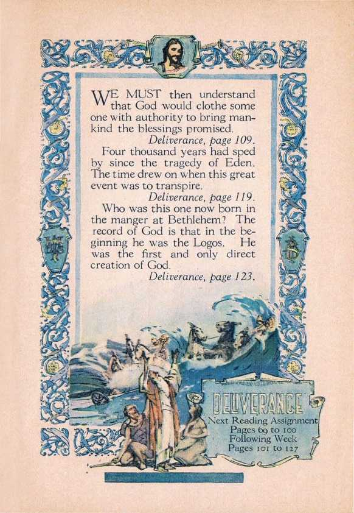
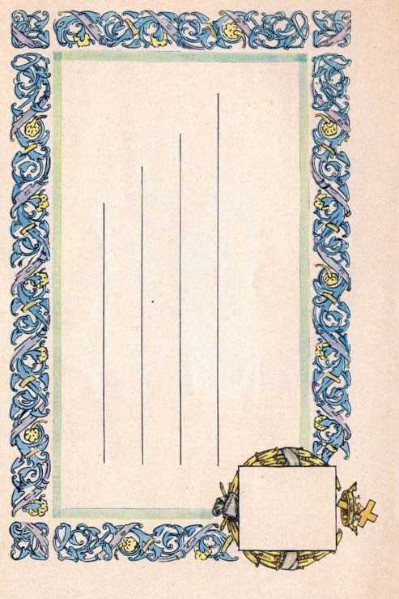

I—TAVING a fixed plan of 1 1 action from the beginning, God of course would have a systematic arrangement for the carrying of that plan into operation. Deliverance, page 69.
His plan provides for a mighty Deliverer.
Deliverance, page 80.
The reason for the law covenant with Israel was to prove that no one can get life by his own efforts and to prove the necessity of a great Redeemer and Deliverer.
Deliverance, page 84.
T"HE delight of the Lord was -*• not in the destruction of the evil ones. Deliverance, page 79.
At stated times Satan has organized world powers. Egypt excelled in wealth and military power. Assyria was a mighty political power. Babylon magnifies the ecclesiastical elements.
Deliverance, page 89.
All these world powers have in some form opposed God's plan of salvation. Deliverance, page 90.
The Scriptures clearly indicate that Christendom is destined to receive the most complete rebuke that has ever been administered to any power, and with its complete fall Satan shall be bound that he may deceive the nations no more. Deliverance, page 91.

SS'
found in the promise to Abraham.
Deliverance, page 108.
,C/~'OME now and let us reason together with the Lord.'’— I sa iah 1:18.
Deliverance, page 102.
The question at issue is the salvation of man.
Deliverance, page 103.
At the end of the age, where we now are, it is possible to understand much about the Scriptures that heretofore was not understandable by men.
Deliverance, page 108.
The first clear proof that God was beginning to work out his plan for man's deliverance is
Deliverance, page 123
Next Reading Assignment Pages 69 to 100 ' ■■ Following Week «
Pages 101 to 127
’E MUST then understand that God would clothe some
one with authority to bring mankind the blessings promised.
Deliverance, page 109.
Four thousand years had sped by since the tragedy of Eden. The time drew on when this great event was to transpire.
Deliverance, page 119.
Who was this one now born in the manger at Bethlehem? The record of God is that in the beginning he was the Logos. He was the first and only direct creation of God.
